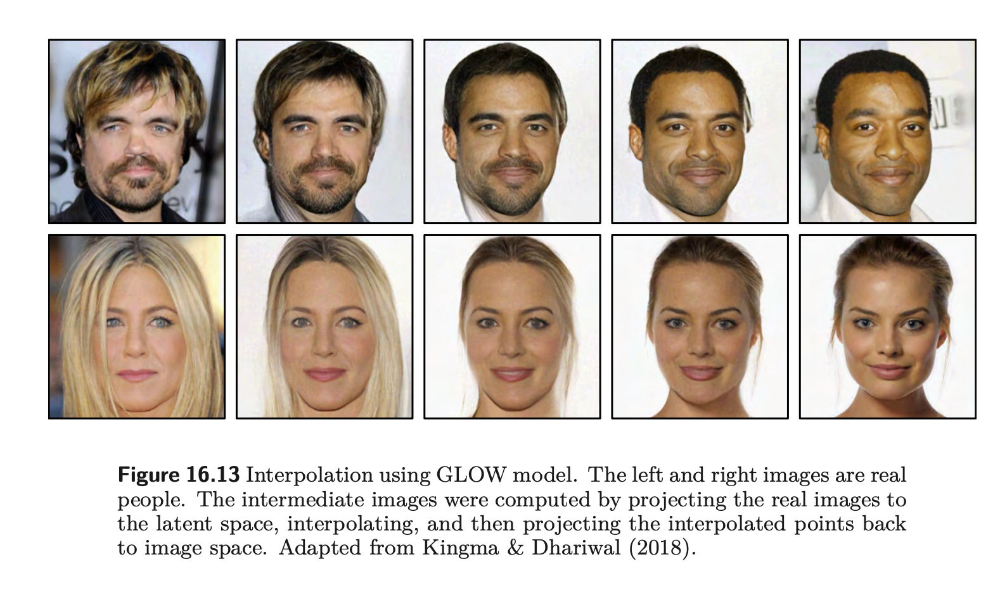

we need to run backprop in deep learning models, the posterior p(z∣x) should be easy to calculate the derivative of. So, we use a gaussian distribution when we can. (Of course this is not really nice always)
NF models offer better and more powerful distribution approximation
Transforms a simple distribution into a complex one by applying a sequence of invertible transformation functions
Flowing through a chain of transformations, we repeatedly substitute the variable for the new one according to the change of variables theorem and eventually obtain a probability distribution of the final target variable.
only works with integer data
Uses of Normalizing Flows

Approximating density models
Steps for a Normalizing Flow
Consider a continuous random variable z∼pθ(z)=N(z;0,I) (simple distribution like Spherical gaussian)
Transform this distribution using a composition of functions to a more complicated one. x=fθ(z)
each fi is invertible (bijective function), so all of the transformations are also invertible x=fθ(z)=fk∘…∘f2∘f1(z)